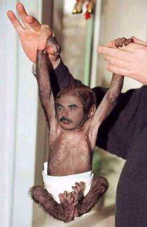
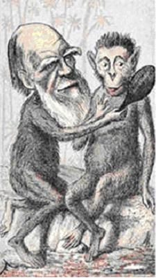
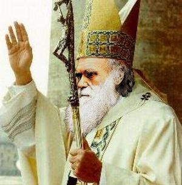

Charles Darwin
 De: La Frikipedia, la enciclopedia extremadamente seria.
De: La Frikipedia, la enciclopedia extremadamente seria.
De la serie grandes personajes:
Darwin sin evolucionar del todo
| Nacimiento
|
siglo XIIX
|
| Muerte
|
Cuando intento follarse a un chimpance, solo para ver que salía y comprobar sus teorías
|
| Ocupación
|
Traficante de animales (sus viajes solo eran un pretexto)
|
| Nacionalidad
|
Ingresh
|
| Malo o bueno
|
¡Hereje!
|
| Atentados contra la humanidad
|
Hacer teorías evolutivas extremadamente absurdas mejores
|
| Religión
|
Creacionista
|
| Notas
|
Dice que descendemos del mono, cuando en realidad venimos de una masa de espagueti y albóndigas
|
Charles Darwin era un ser de ésos que nació con ganas de tocar las narices. Aprovechándose de su gran inteligencia, desarrolló una teoría totalmente herética que sugería que las especies evolucionaban. Proponiendo que lo que en ese entonces se creía (o sea, que Dios lo creó todo y que nos hizo de la nada) era en realidad una mierda mentira y que había que cambiar todo.
Biografía
 Millones de años de evolución para esto
hizo una tortilla lo incubó hasta que salió un patito, que resultó que era el último de una especie desconocida. Lo llamó El Pato Darwin. Luego le cortó el cuello y empleó su sangre para hacer un ritual satánico.
Pasados unos años, seguía empeñado en mirar la naturaleza y convivir con ella, lo que le convirtió en el primer hippie de la historia (este es su hecho más destacado, y no su Teoría de Evolución). Empezó a experimentar con las plantas, combinando el tabaco con unas setas, y evolucionaron en una planta de varias hojas de olor raro, que bautizó como su ayudante de laboratorio, María Juana.
Un día le vino una inspiración: Los seres vivos iban cambiando con el paso de los años. A este proceso le llamo evolución, porque le pareció una palabra chula, más que nada...
Su baza más importante era decir que el hombre descendía del mono (mentira, fueron creados del barro por los Dioses de la Tierra Denmedio (De Mídel Earz)).
Su teoría no tuvo demasiada aceptación social hasta que este descubrió a unos seres llamados Pokémon, que demostraban su teoría en poco tiempo. Dedicado a estudiar su vida, se cambió el nombre por el de Profesor Oak, se fue a vivir a Pueblo Paleta (también conocido como Lepe) y mató al padre de un tal Ash Ketchum y mandó al hijo de aventuras, para poder cortejar a la madre.
Sus viajes
Con su mono amedio , viajó en un barco monocasco para encontrar a su mamá, saltando de aquí para allá con su monito del culito. Monopilizó la búsqueda de los origenes del hombre y con un monopatín recorrió tierra firme con su monóculo siempre puesto. siempre se declaró monógamo y jamás tuvo aventuras extramatrimoniales en sus viajes. en uno de sus viajes descubrió un monolito fabricado por una civilización monoteísta , este fue su viaje mas monótono y con tanto mono me ha dado ganas de comer un plátano
 Darwin con su monito Amedio
Evolución del hombre
- Australopithecus: mono a cuatro patas con traccion en las cuatro ruedas
- Homo habilis : en este periodo aprendió a liarse un porro
- Homo erectus :en esta fase es cuando empezó a ir empalmado todo el día y parte de la noche
- Homo sapiens : empezó a diferenciar la velocidad del tocino
- Nomo sapiens sapiens : sabe el doble que el homo sapiens; el doble de estúpido, el doble de insensato, el doble de tonto...
- Homo frikipedista : aqui es ya cuando tocamos fondo y comienza el declive de la especie
este es el eslabón perdido , pero por mi que se quede perdido
Etapa como seleccionador
Dirigió la selección natural de futbol durante un largo periodo de tiempo. Su método para elegir integrantes de la plantilla creó controversia entre la federación y el propio Darwin.
ejemplos:
- Dejó de seleccionar a los dinosaurios porque eran torpes de movimientos y se comían parte importante del público , lo cual hacía perder parte de aficionados al fútbol, literalmente hablando
- Dejó de convocar a los unicornios porque en los remates de cabeza pinchaban los balones .
- La razón esgrimida para no seleccionar al ave fénix es que le derrivaban en el área pero resurgía y se levantaba y el árbitro no señalaba la pena máxima
- Al basilísco, porque cada vez que el árbitro le pitaba falta se ponía como un basilísco
- La quimera se descartó ella misma por que su parte de león no dejaba de mordisquear a su parte de cabra
- El minotauro entró en un laberinto y acabo en la feria de abril, donde le pusueron unas cuantas banderillas.
- La esfinge siempre fué muy enigmática y jamás se adaptó al grupo
...se rumorea la salida de la seleccion de la ballena por fines cientificos
Teorías alternativas
Creacionísmo
No creer que dios creo al hombre,golpe de remo ; decir que el hombre desciende de los monos ; golpe de remo ...
Los dinosaurios , de existir , se extinguieron por que no cabían en el arca , y si no te crees esto ; golpe de remo.
Las pirámides siempre han estado ahí , por que Dios las puso ahí y si no te lo crees ; golpe de remo
Teoría de Lamarck
La teoría de Lamarck , dió la casualidad que la enunció un tal Lamarck ( casualidades de la vida ).
Esta teoría consistía en que si no usabas algo y dejaba de ser útil, en generaciones venideras nacerian sin esa parte ( usa tambien la mano izquierda para tus manualidades por el bien de las generaciones venideras )

según Lamarck , si algún día necesitamos un par de ojos mas y otra boca , milagrosamente nos saldrá
Según esta teoría , unos seres del espacio exterior crearon este mundo con sus rayos láser e hicieron ; piuuuu , piuuuuu...y lo crearon todo ( si creías que el creacionísmo era absurdo , imaginate esta teoría...)
Teoría digimon
Según esta teoría , nacerian de un huevo y al principio solo sabían decir su nombre una y otra vez, luego se convieron en bichos patéticos de color rosa que solo son cabezas andantes o saltarines .
Tras millones de años de evolución e convirtieron en la forma "guay" por llamarlo de alguna manera, aunque siguen siendo muy patéticos y luego se hacen grandes vete tu a saber porqué.
Seguidamente , cambia ligeramente algo en su aspecto , y finalmente se se hacen gigantes , pero no se sabe como llega a convertirse en hombre por culpa del eslabón perdido.
 Darwin de paso por el Vaticano
Postulados de la Teoría de la Evolución
- Las especies evolucionan en otras, sin interferencia de Dios, porque Dios no existe.
- Suponiendo que el creacionismo fuese cierto, entonces sí existiría Dios.
- Primera conclusión: Dios no existe. En caso de existir, es lo bastante hijoputa como para matar especies enteras en los momentos de aburrimiento.
- Las especies evolucionan un máximo de 2 veces, habiendo un máximo total de 3 estados.
- Cuando una especie evoluciona, tarda más niveles en aprender sus ataques.
- El máximo nivel de una especie, evolucionada o no, es el 100. Si al llegar a ese nivel no ha evolucionado, se jode y se queda así.
- Hay especies que involucionan en otras (véase pijo, cani).
- Fraga es la prueba de que la vida se originó hace un billón de años y que las células pueden fusionarse, ya que Fraga es una colonia de microorganismos prehistóricos.
Lista de creencias a las que desafía esta teoría
- Desafía a Dios.
- Desafía a Diox.
- Desafía la dieta.
- Desafía al progreso.
- Desafía al sistema.
- Desafía a Matrix.
- Desafía la gravedad.
- Desafía a la razón.
- Desafío Total I, II, III y IV.
- Desafía a tu llavero de Hello Kitty.
- Desafia a Mastercard
Autor(es):
- Krusher
- Nexo
- EmuAGR
- Frikiman
- Aque
- Alex2610
- Roms
- Sabao
- Nadaquever
- Nexius
Frikipedia 2005-2016, Licencia
GFDL 1.2 - Extraído por FrikiLeaks